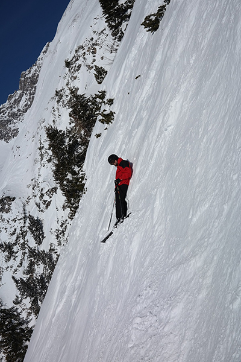
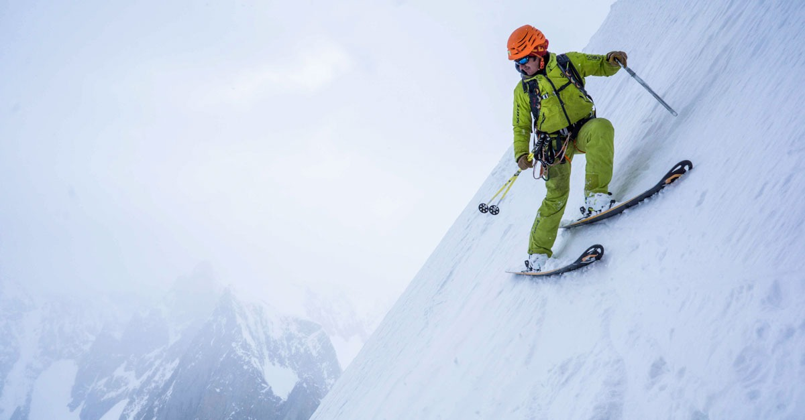
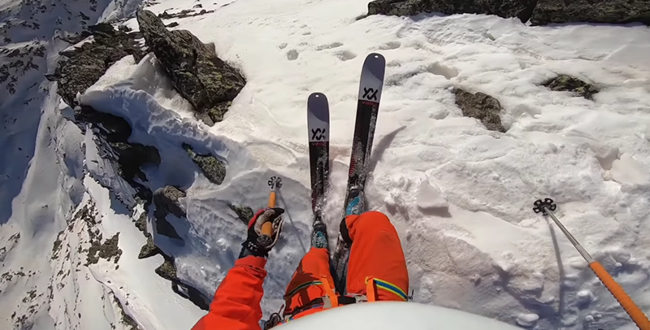
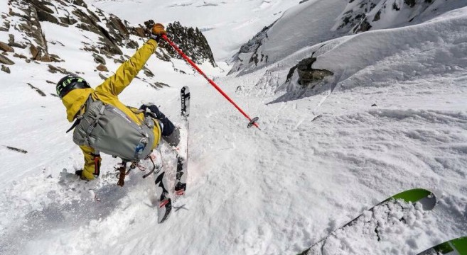

Le ski de pente raide, ou ski extrême, est une discipline du ski qui conjugue alpinisme et ski de montagne et se pratique dans un couloir ou sur une pente.
Généralement, la pente démarre d'un sommet que l'on atteint après une ascension à pied et/ou à ski en mettant parfois en œuvre du matériel d'alpinisme (piolets, crampons, cordes). Les pentes sont définies par leur raideur, sans que l'on puisse fixer un seuil exact au-delà duquel une pente est considérée comme raide.
Le ski de pente raide, discipline extrême historique, est parfois confondu avec le ski freeride, une pratique du ski alpin hors-piste.

La notion de « ski extrême » est de plus en plus délaissée pour celle de « pente raide ». Plusieurs raisons, notamment liées à l'évolution du matériel, l'expliquent :
Selon la pratique et l'itinéraire, tant à la montée qu'à la descente, les choix techniques et les caractéristiques du ski peuvent varier. Un poids léger facilite la montée, mais un ski lourd (sans carbone) facilitera l'engagement du skieur dans la descente. La longueur sera courte (virage serré) à moyenne (meilleure stabilité). Une rigidité prononcée facilite la tenue sur les profils incurvés (goulotte), fortement inclinés ou à neige dure. Le cambre sera classique pour augmenter la surface de contact avec la neige et éviter ainsi les torsions.
En plus du matériel classique de ski de montagne (détecteur de victimes d'avalanches, couteaux à ski, etc.), les pratiquants se munissent du matériel d'alpinisme utile à l'ascension du sommet ou à l'accès de la zone skiable : un baudrier léger d'alpinisme, une corde de rappel (utilisée pour les rappels à ski), des crampons adaptés aux chaussures de ski, un ou deux piolets courts, casque, descendeur, etc. Le sac à dos est muni de sangles « porte-ski », facilitant le portage des skis lors de la progression à pied.

La pratique du ski de pente raide a émergé dans les Alpes. Une des descentes les plus marquantes des années 1930 est celle du Fuscherkarkopf, réalisée en 1935 par Peter Schindelmeister et Fritz Krügler, motivés par la seule difficulté technique. Auparavant, en 1926, le guide français Armand Charlet avait descendu une partie du glacier d'Envers du Plan (Chamonix) sur des skis de 1,50 m.
En 1937, Émile Allais descend l'aiguille d'Argentière par le glacier du Milieu, avec Maurice Lafforgue et André Tournier, ainsi que la pente nord du Dôme du Goûter avec E. Livacic. En 1953, le guide chamoniard Lionel Terray et le Canadien Bill Dunaway descendent la face nord du mont Blanc.
Durant les années 1960, le Suisse Sylvain Saudan contribua au développement et à la médiatisation de la discipline auprès du grand public. Le 23 septembre 1967, il descend le couloir Spencer de l'aiguille de la Blaitière (Chamonix), avec une pente moyenne de 50° et des sections à 55°.

En 1971, Serge Cachat-Rosset (1948-2019) descend la face nord-est des Courtes. En 1973, il descend la face nord de l'aiguille Verte par le couloir Couturier. Un dénivelé de 1 100 mètres avec une pente jusqu'à 50-55°.
En 1977, Jean-Marc Boivin descend l'éperon Frendo sur l'aiguille du Midi. En 1980, il exerce une nouvelle fois son talent dans une trilogie au Cervin : descente de la face est, ascension en solo de la face nord par la voie Schmid suivie de la descente en deltaplane.

À partir des années 1990, la discipline se démocratise peu à peu conduisant à tous les exploits et toutes les dérives. Symptomatique de la course à l'exploit qui caractérise cette époque, figure Bruno Gouvy qui atteint 177 km/h en monoski. Il saute en parachute depuis un hélicoptère au-dessus des Drus afin de skier une pente de neige suspendue atteignable par des rappels.
Plus tard, en 2001, Marco Siffredi réussit le couloir Norton à l'Everest.
Skieur de pente raide emblématique de la vallée de Chamonix, Vivian Bruchez continue à dénicher des lignes sublimes à travers les Alpes. Voici l'extrait d'une interview :
| kieur | Voie |
|---|---|
| André Anzévui | Descente du Cervin en face nord (avec rappels) |
| Anselme Baud | Auteur de topoguides et ouvreur de nombreux itinéraires dans le massif du Mont-Blanc |
| Stefano de Benedetti | Descente de la Blanche de Peuterey face Est, Combin de Valsorey NW |
| Daniel Chauchefoin | Voie des Autrichiens aux Courtes ; face Nord de l'aiguille du Midi |